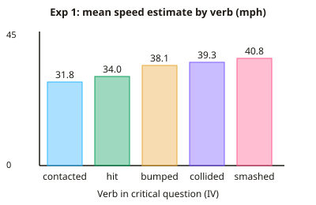

A-level Psychology Year 12 · Topic 4
Cognitive area: core studies
The cognitive area looks at how we take in, store and recall information, and why memory and attention are less reliable than we think.
We will study six core studies: Loftus and Palmer on leading questions, Baddeley on memory coding, Moray on selective attention, Simons and Chabris on inattentional blindness, Grant on context-dependent memory, and Schmolck on flashbulb memories.
For each one, learn the aim, method, results and conclusion, and be ready to evaluate it and link it to theory.
- 9 subtopics
- 270 questions
- Free: 4.1 notes and 10 questions
In this topic
- 4.1Loftus and Palmer (1974) Reconstruction of automobile destructionFree below · 33 questions
- 4.2Baddeley (1966) Coding in short-term and long-term memoryOpen in Full Marks · 38 questions
- 4.3Moray (1959) Attention in dichotic listeningOpen in Full Marks · 36 questions
- 4.4Simons and Chabris (1999) Gorillas in our midst: inattentional blindnessOpen in Full Marks · 28 questions
- 4.5Grant et al. (1998) Context-dependent memory in silence and noiseOpen in Full Marks · 34 questions
- 4.6Schmolck et al. (2000) Memory distortions and recollections of the O.J. Simpson verdictOpen in Full Marks · 40 questions
- 4.7Sebastián and Hernández-Gil (2012) Developmental pattern of digit spanOpen in Full Marks · 25 questions
- 4.8Andrade (2010) What does doodling do?Open in Full Marks · 20 questions
- 4.9Pozzulo et al. (2012) Children's identification accuracy in target-absent line-upsOpen in Full Marks · 16 questions
4.1 · Free notes
Loftus and Palmer (1974) Reconstruction of automobile destruction

Key points
- Aim: to investigate whether the wording of a leading question (the verb used) affects speed estimates, and whether it changes the memory itself, supporting reconstructive memory.
- Method: two laboratory experiments using an independent groups design. Participants watched film clips of traffic accidents, then answered a questionnaire. The IV was the verb in the critical question and the DV was the speed estimate (mph) or the answer to a later question.
- Experiment 1: 45 students watched 7 short clips of traffic accidents. The critical question was 'About how fast were the cars going when they ___ each other?' Five verbs were used (smashed, collided, bumped, hit, contacted), with 9 participants per verb.
- Experiment 1 results: the mean estimate rose with the intensity of the verb: smashed 40.8, collided 39.3, bumped 38.1, hit 34.0 and contacted 31.8 mph. The gap between the highest and lowest was 9.0 mph.
- Experiment 2: 150 students watched a film of about 1 minute that included a 4-second multiple-car crash. There were three groups of 50: smashed, hit and a control group who were not asked about speed.
- Experiment 2 test: one week later all participants answered 10 questions, including the critical question 'Did you see any broken glass?' There was no broken glass in the film.
- Experiment 2 results: 'yes' answers were smashed 16/50 (32%), hit 7/50 (14%) and control 6/50 (12%). The verb 'smashed' made false recall of broken glass much more likely.
- Conclusion: there are two possible explanations. Response-bias factors mean the verb only shapes the answer given. Substitution means the leading information is integrated into the original memory, altering the memory representation. Experiment 2 supports the second explanation.
- Strengths: control of extraneous variables, a standardised procedure, quantitative data that is easy to analyse, a control group for comparison, and good replicability.
- Weaknesses: low ecological validity (a film has no emotional stress or consequences), a student sample (not generalisable), demand characteristics and deception. Estimating speed is also a difficult task.
- Applications: the study shows eyewitness testimony is unreliable and shapes how police should word questions. It led to techniques such as the cognitive interview.
In more detail
- Poor at judging speed: four of the films in Experiment 1 showed staged crashes at known speeds (20, 30, 40 and 40 mph), yet the estimates barely changed, e.g. the 20 mph crash was estimated at about 38 mph. People are bad at judging speed, which makes them more open to the wording of the question.
- Speed in Experiment 2: the smashed group estimated a mean of about 10.5 mph and the hit group about 8.0 mph, so the verb shifted estimates again before the broken-glass question was asked.
- Two kinds of information: Loftus and Palmer argued that memory combines the original perception with information supplied after the event; over time these merge into one memory, so we cannot tell which part came from where.
- Contrasting real-life evidence: Yuille and Cutshall (1986) interviewed 13 real witnesses to a shooting in Canada; months later their recall was still accurate and leading questions had little effect. This challenges how far lab findings generalise.
- Exam tip: in Experiment 1 the IV is the verb in the critical question (smashed, collided, bumped, hit or contacted) and the DV is the mean speed estimate in mph; in Experiment 2 the DV is the answer to 'Did you see any broken glass?'
Practice
Loftus and Palmer (1974) Reconstruction of automobile destruction: 10 questions
Pick an answer to check it, or open the answer for the explanation.
1. In Loftus and Palmer's first experiment, what were the independent variable (IV) and dependent variable (DV)?
- IV: speed estimate; DV: the verb used
- IV: film clip; DV: age of participant
- IV: the verb used; DV: speed estimate in mph
- IV: broken glass; DV: the verb used
Show answer
C: IV: the verb used; DV: speed estimate in mph. The researchers manipulated the verb in the critical question (IV) and measured the speed estimate in mph (DV).
2. Which verb produced the highest mean speed estimate in Experiment 1?
- Collided (39.3 mph)
- Bumped (38.1 mph)
- Smashed (40.8 mph)
- Hit (34.0 mph)
Show answer
C: Smashed (40.8 mph). 'Smashed' gave the highest mean estimate, 40.8 mph. 'Contacted' gave the lowest, 31.8 mph.
3. Using the Experiment 1 means, what was the difference between 'smashed' (40.8 mph) and 'contacted' (31.8 mph)?
- 8.0 mph
- 7.0 mph
- 10.0 mph
- 9.0 mph
Show answer
D: 9.0 mph. 40.8 − 31.8 = 9.0 mph.
4. How many participants took part in Loftus and Palmer's Experiment 2, and how were they grouped?
- 45 in five groups of 9
- 150 in five groups of 30
- 100 in two groups of 50
- 150 in three groups of 50
Show answer
D: 150 in three groups of 50. Experiment 2 had 150 students split into smashed, hit and control groups of 50 each.
5. In Experiment 2, 7 of the 50 participants in the 'hit' group reported seeing broken glass. What percentage is this?
- 32%
- 14%
- 7%
- 17%
Show answer
B: 14%. 7 ÷ 50 × 100 = 14%.
6. What was the purpose of the control group in Experiment 2?
- To see the film twice
- To check participants' eyesight
- To give a baseline with no leading verb
- To be asked about speed using a stronger verb
Show answer
C: To give a baseline with no leading verb. The control group was not asked about speed. It showed how often broken glass was reported without any leading verb.
7. A police officer asks a witness, 'How fast was the van going when it crashed into the wall?' According to the study, what is the likely effect?
- A higher estimate than if 'touched' were used
- A lower estimate than if 'touched' were used
- Perfect accuracy of the estimate
- No change in estimate, as verbs do not matter
Show answer
A: A higher estimate than if 'touched' were used. Intense verbs such as 'smashed' or 'crashed' led to higher speed estimates than milder verbs such as 'contacted'.
8. Why were participants asked about broken glass one week after the film?
- To test whether the leading question had altered their memory
- To allow the film to be edited
- To reduce the sample size
- To check that they remembered the verbs
Show answer
A: To test whether the leading question had altered their memory. The delay showed whether the verb had a lasting effect on the stored memory, rather than only affecting the immediate answer.
9. Which statement best describes the substitution explanation?
- Participants guess a figure to please the researcher
- Post-event information is integrated into the original memory
- Memories are stored exactly like a video recording
- Leading questions only affect people who were not paying attention
Show answer
B: Post-event information is integrated into the original memory. Substitution means the leading information from the question is combined with the original memory, changing the memory representation.
10. Which is a weakness of the sample in the study?
- There were too many participants to analyse
- Participants were all experienced police officers
- Participants were all students, so results may not generalise
- Participants were chosen at random from the population
Show answer
C: Participants were all students, so results may not generalise. Students are a narrow group (young, and often with limited driving experience), so the findings may not generalise to all eyewitnesses.
Keep going in Full Marks
Full Marks has 33 questions on Loftus and Palmer (1974) Reconstruction of automobile destruction (23 more than here), set out in practice levels. You also get notes and 3D models for all 9 subtopics of Cognitive area: core studies, plus games, timed exams and past papers.